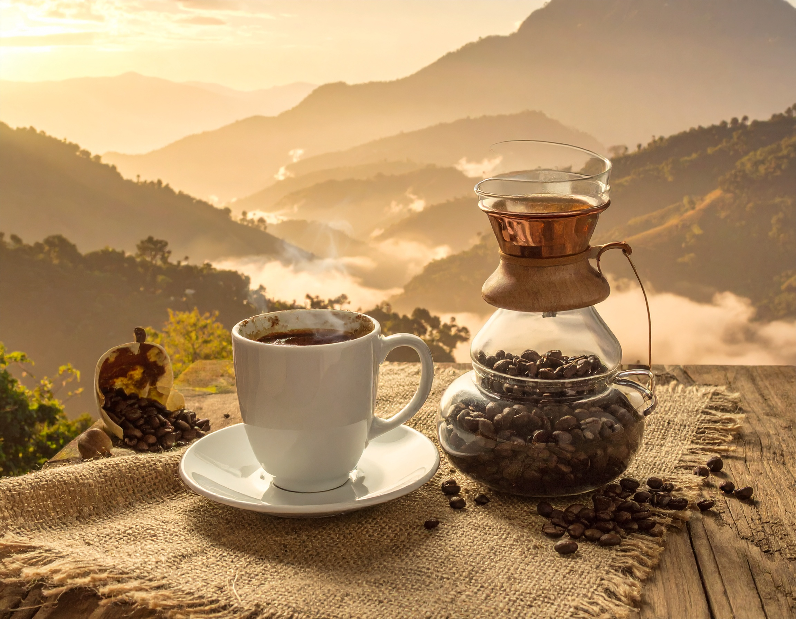
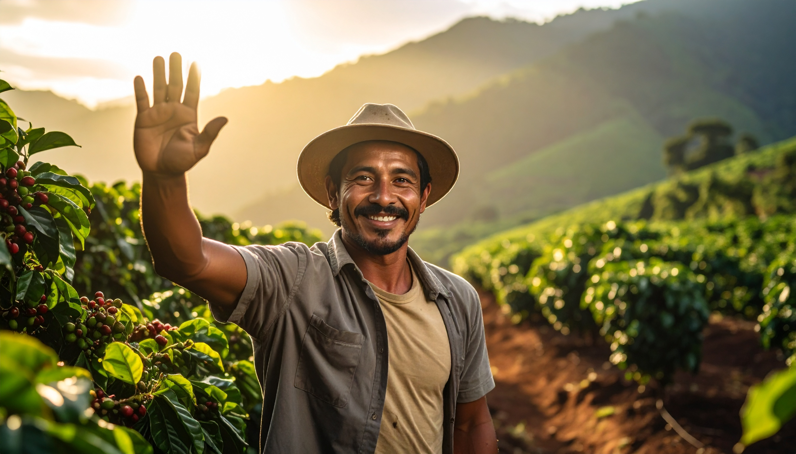
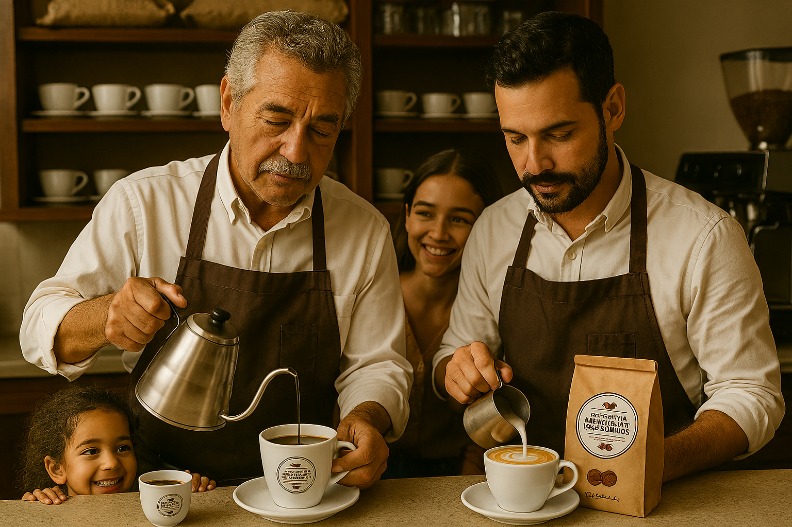
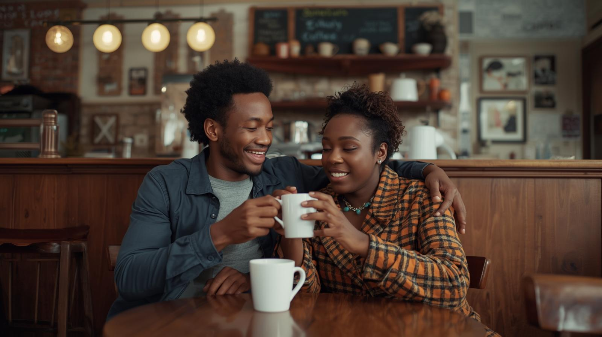
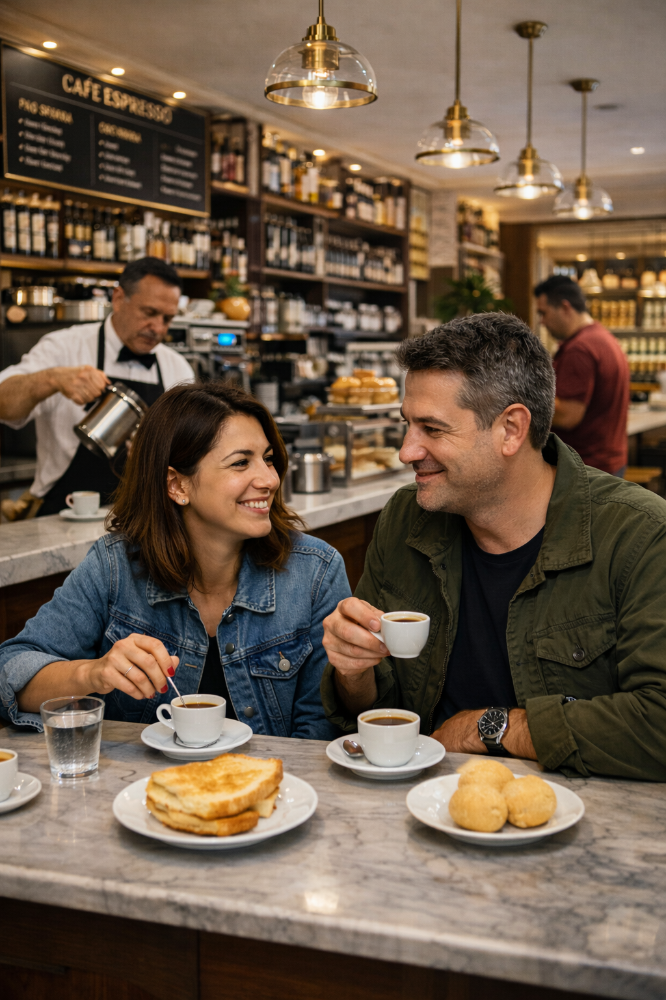

A cafeteria mais tradicional e Mais Brasileira
A cafeteria Amanhecer dos sonhos, tem todo o cuidado com seus produtos, acompanhamos cada processo desde a colheita , até a produção em nosso estabelecimento. Temos satisfação em atendê-lo com excelência.

Após todo a colheita e tratamento, preparamos com amor, atenção e qualidade e tradição em cada etapa. Tratamos de cada processo para garantir uma experiência íncrivel.

E por fim, nossa missão, servi-los o sabor de casa! Não é somente um grão de café, mas história, tradição e valores de família em cada experiência.

Cafeteria Amanhecer dos Sonhos, O café com o sabor do Lar.
Nossa proposta é transmitir em cada xícara, o aconchego e conforto que só um bom café é capaz de proporcionar. Faça parte da Família!
Venha conhecerConheça nosso cardápio
As melhores opções para o café da manhã, o almoço, o lanche da tarde e o jantar. Deliciosos sabores, os melhores ingredientes e momentos inesquecíveis.
Nossas instalações
Para os momentos mais felizes
____________________Com um ambiente amplo e com espaço kids, a cafeteria dos sonhos tem o objetivo de deixar o cliente a vontade para desfrutar das experiências imersivas das nossas maravilhas do cardápio. Prezamos pelo conforto máximo de cada integrante do passeio, o espaço kids compõe um ambiente com pula-pula, vídeo-games, piscina de bolinha, pufs e ambiente de leitura. Localizados na vila-Mariana, contamos com fácil acesso ao metrô e estacionamento para 10 carros e 4 motos, temos seguro em cada m² do estabelecimento para garantir o máximo de aproveitamento. O salão comporta até 20 pessoas sentadas, nas noites de fim de semana trabalhamos com reservas devido a alta demanda, oferecemos pizza e nosso exclusivo pão de queijo recheado.
Salão principal
Salão principal
Hall de entrada
Espaço kids
